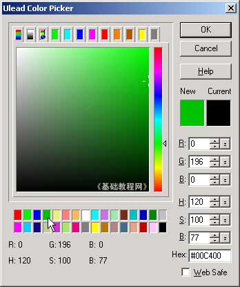
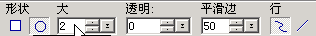
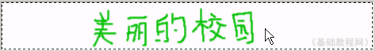
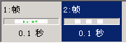
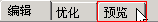

Ulead Gif Animator 基础教程
二、空白动画 返回
动画的原理是，许多图片快速连续播放，人眼睛看着就是一个连贯的动画了，下面我们来看一个简单的动画；
1、运行程序
1）在桌面双击Ulead Gif Animator图标，或者在文件夹中双击它的图标，就可以启动程序；
2）启动成功后，显示一个默认的空白文档，如果出现向导提示，点“关闭”；

2、制作动画
1）选择画笔工具，在下面的黑色颜色块上点一下，出来一个颜色面板，在下边选中绿色，然后点右上角的“OK”按钮确定；

2）在白色的画布上点一下，发现笔画太粗了，得调细小些，同时按一下Ctrl＋Z组合键，撤销刚才画的一笔；
在窗口上边的画笔工具栏中，把大小中的10改成2，其他不变；

3）在画布上写上“美丽的校园”几个字，这是第一幅图片，也就是第一帧；

4）在下面的帧面板中，点击下边的一个白色按钮 ，添加一个空白帧；
，添加一个空白帧；

这样就有了两帧，第一帧里面有文字，第二帧里面是空的，点一下工作区上边的“预览”标签，进入到预览窗口；

看一下动画效果，再点“编辑”返回到编辑窗口；
5）点菜单“文件－保存”命令，以“美丽”为文件名，保存文件到自己的文件夹；
再点菜单“文件－另存为－Gif文件..”，也以“美丽”为文件名，保存文件到自己的文件夹，这次保存的是是Gif图片文件；

本节学习了制作动画的一般步骤，以及保存和另存文件的方法，如果你成功地完成了练习，请继续学习下一课内容；
本教程由86团学校TeliuTe制作|著作权所有转载和引用本站内容，请保留作者和本站链接。